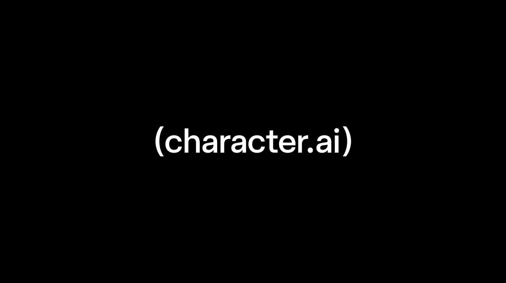

01
Character.ai enters Chapter 11 to pursue a sale

Character.ai says it has initiated voluntary Chapter 11 proceedings to pursue a court-supervised sale after legal, regulatory and operational headwinds. Its October 12 statement says the platform remains available and subscriptions continue unchanged for now. The company hopes a buyer will enable continued operations, but says it will wind down the platform if no actionable bid emerges. It expects the sale process to finish by late November or early December 2026.